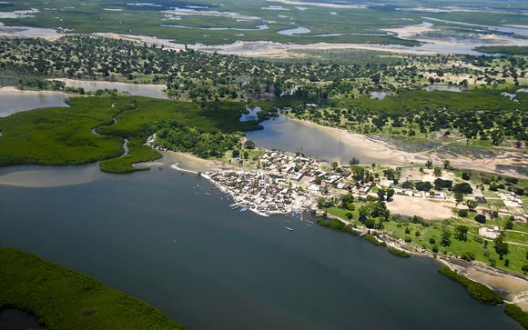
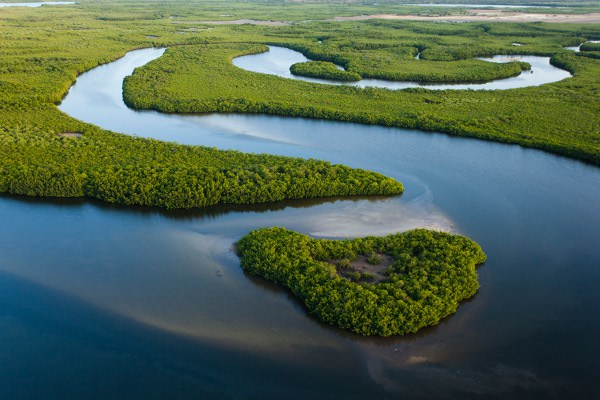
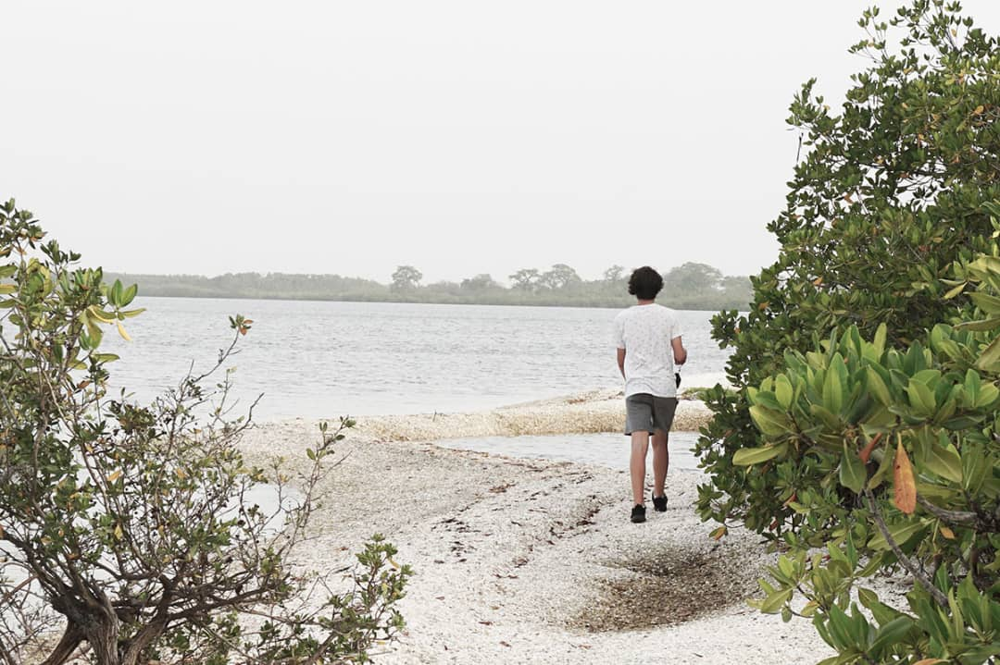
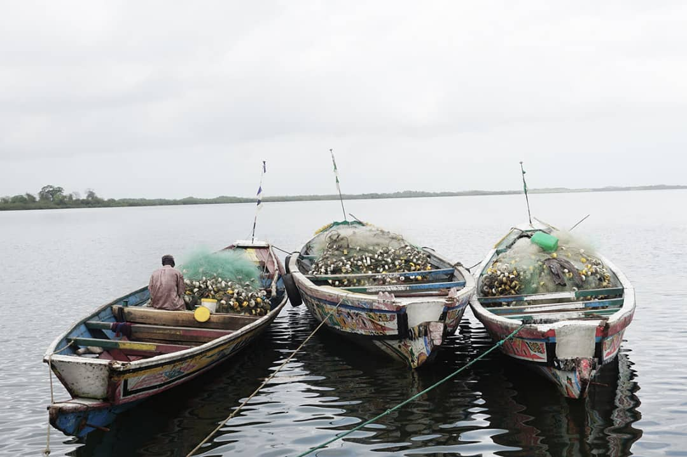
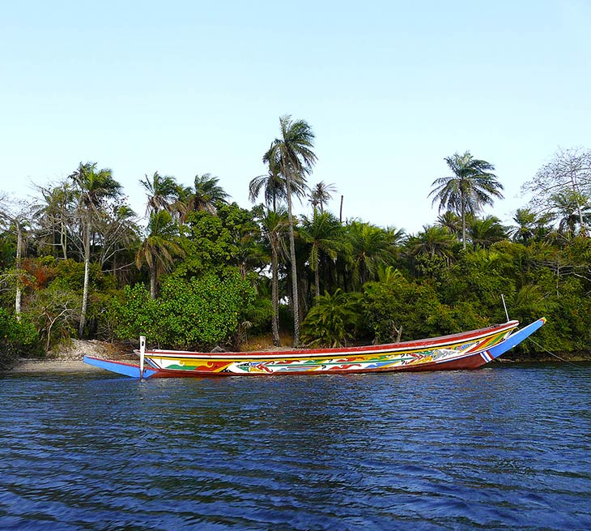
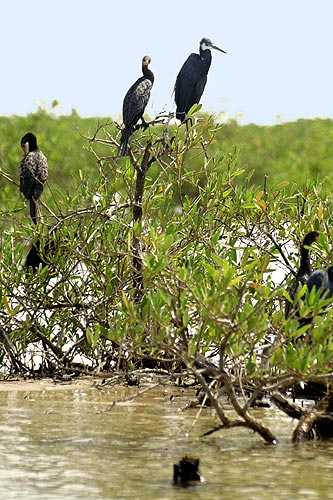
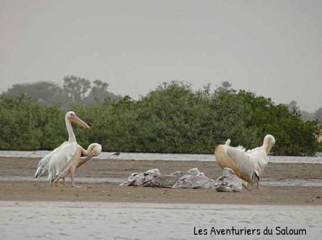

Une des merveilles de la nature au Sénégal
La majestueuse région du Sine-Saloum,considérée comme le joyau du Sénégal,située à la croisée de deux fleuves, le Sine (au nord et caractérisé par des paysages et un climat semi-aride) et le Saloum (au sud comportant un paysage davantage verdoyant) juste au nord de la Gambie. S’étendant sur près de 76 000 hectares, le parc national du Delta du Saloum (PNDS) est le deuxième plus grand parc du Sénégal et est classé depuis 2011 au patrimoine mondial de l’UNESCO. Le Delta est un véritable dédale d’îles et de bras d’eau serpentant dans les mangroves, étendue de sable et de mangroves. Un lieu unique et absolument magnifique où le calme et la sérénité sont maîtres. Le Sine-Saloum est un véritable paradis pour tout amateur de culture, de pêche, de chasse et d’observation de la faune.
 Le coquillage est présent partout dans le Sine-Saloum. Pour les Sérères, le coquillage fait partie de leur paysage depuis des lustres, mais pour un touriste, n’est-ce pas féérique de retrouver ce squelette de mollusque un peu partout? Non seulement le retrouve-t-on sous la forme d’amas de coquillages (amas coquilliers), mais on le retrouve également en guise de sentier ou encore, en guise de mur de certaines maisons dans les villages. Diorom boumag » ou l’île aux coquillages, une merveille au cœur du Delta du Saloum, est classé au Patrimoine mondial de l’Unesco depuis 2011. C’est sans aucun doute un de mes coups de cœur! L’île est uniquement faite de coquillages. Elle fait 400m de long par 300m de large. On retrouve même à certains endroits jusqu’à 12 mètres de hauteur de coquillages. L’île aurait servi de lieu de tombeau pour un peu plus de 7000 corps entre le VIIe et XIIIe siècle.
Que ce soit pour pêcher, observer les oiseaux ou déguster les huitres, la balade en pirogue est MUST pour découvrir la région et les peuples qui s’y retrouvent. À peu près tous les endroits dans le Sine-Saloum offrent des balades en pirogue. Tout dépend de ce que vous souhaitez y observer ou de ce que vous souhaitez faire.
Comme le Sine-Saloum vit au rythme de ses marées, il est impératif de visiter un village de pêcheur. Un endroit intéressant afin de bien vivre cette expérience et rencontrer la royauté Sérère est le village de Sipo. Vivant des produits de la mer, ce village est très dynamique et authentique! La reine de Sipo, que j’ai eu la chance de rencontrer, est absolument adorable! Attention messieurs, elle vous séduira à tout coup! Le village de Falia aussi était très joli!
Située dans le delta du Saloum, au printemps l’île aux Oiseaux devient un grand lieu de frai. La grande feria débute à partir d’avril. Sternes, caspiennes royales, mouettes à tête grise, goélands railleurs paradent et pondent. Fin mai et début juin, les oisillons sortent de leurs coquilles. Débarquer sur l’île est une scène que peu de gens ont la chance de voir. Par centaines, des oiseaux volent autour de vous, parfois à moins d’un mètre. Il a même été répertorié plus de 70 000 oiseaux à certaines périodes.
 Avec une superficie de près de 76 000 hectares, le delta fait maintenant partie du patrimoine mondial et de réserve de biosphère. Situé au confluent des fleuves du Siné et du Saloum, on peut non seulement y faire quelques randonnées (puisqu’une belle forêt longe la côte), mais on peut aussi y faire de l’observation d’oiseaux (l’île aux oiseaux), de tortues de mer et c’est également à cet endroit qu’on peut se rendre à l’île aux bœufs (endroit où l’on voit le passage des bœufs dans l’eau pour se rendre sur une île. On m’a dit que c’était superbe comme spectacle!).
Il est répertorié 366 espèces d’oiseaux, dont les fameux pélicans, flamants roses, le héron goliath (magnifique d’ailleurs), l’aigrette des récifs ou encore l’avocette. Les forêts de palétuviers, les vasières, les bancs de sable et les îlots sableux constituent un ensemble d’écosystèmes qui permet au Delta d’accueillir des populations importantes d’oiseaux d’eau. Le Delta du Saloum est le troisième site d’importance ornithologique de l’Afrique de l’Ouest. La zone abrite le quart de la population mondiale de sternes royales que vous retrouverez tout près du Delta du Saloum à l’île aux oiseaux. Dans les différents villages du Sine-Saloum, il est possible de faire une balade en pirogue pour aller observer les oiseaux. Vous n’avez qu’à demander à votre hôtel.